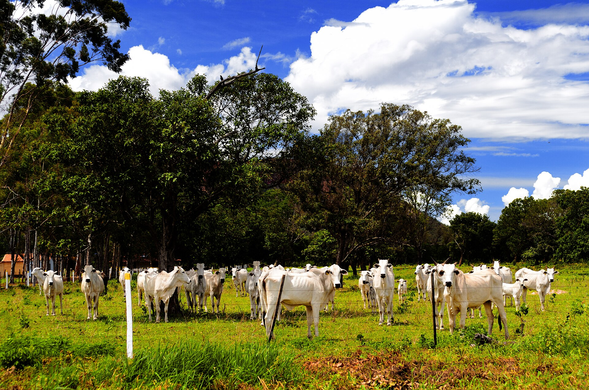
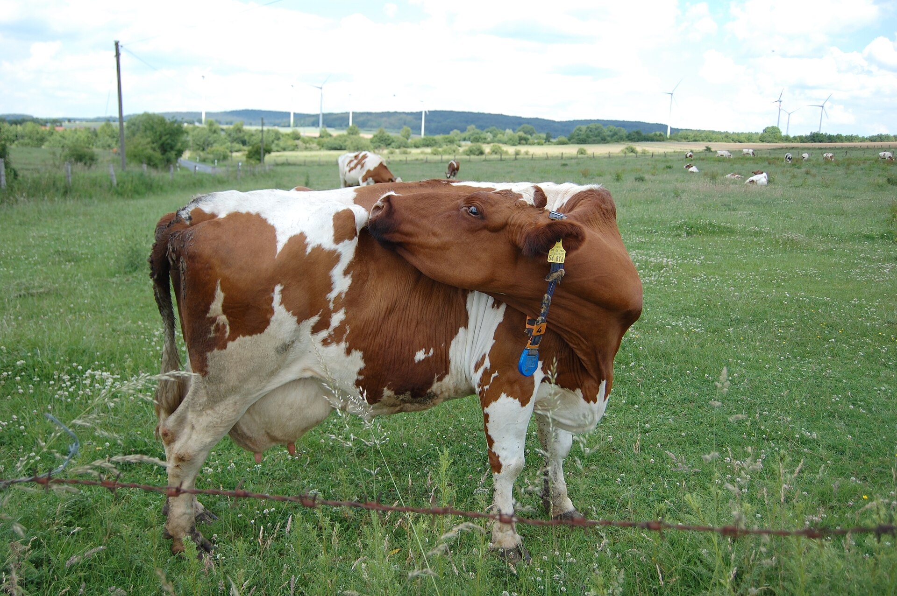
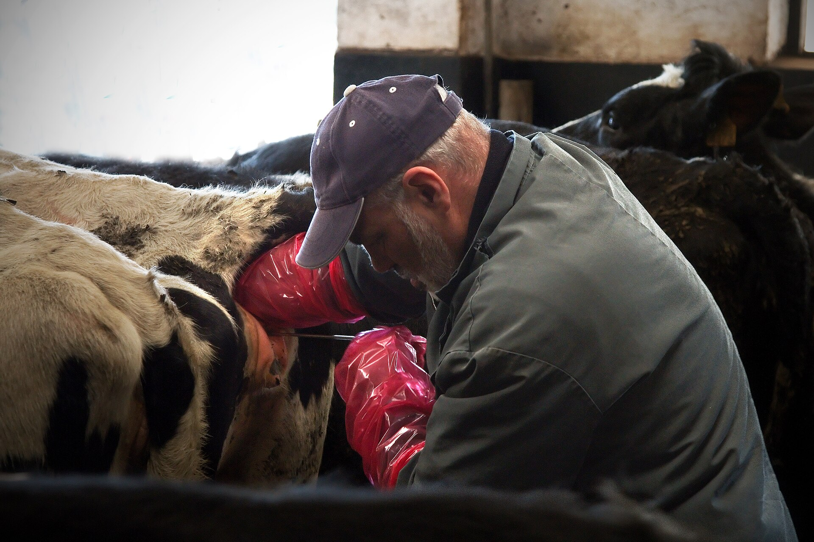
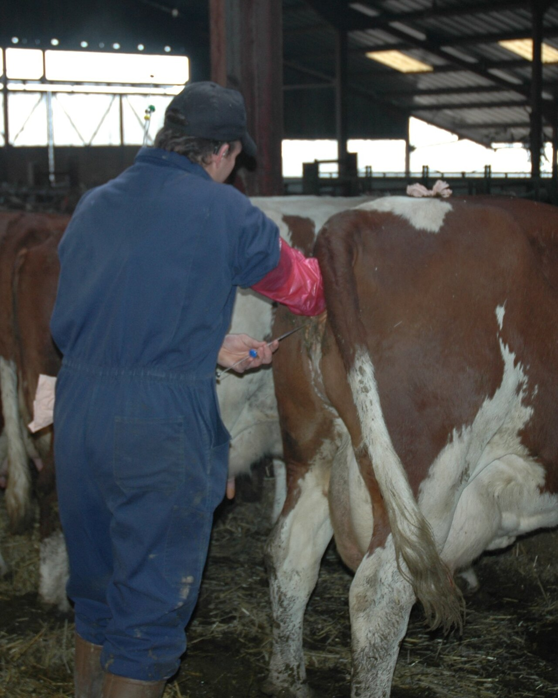
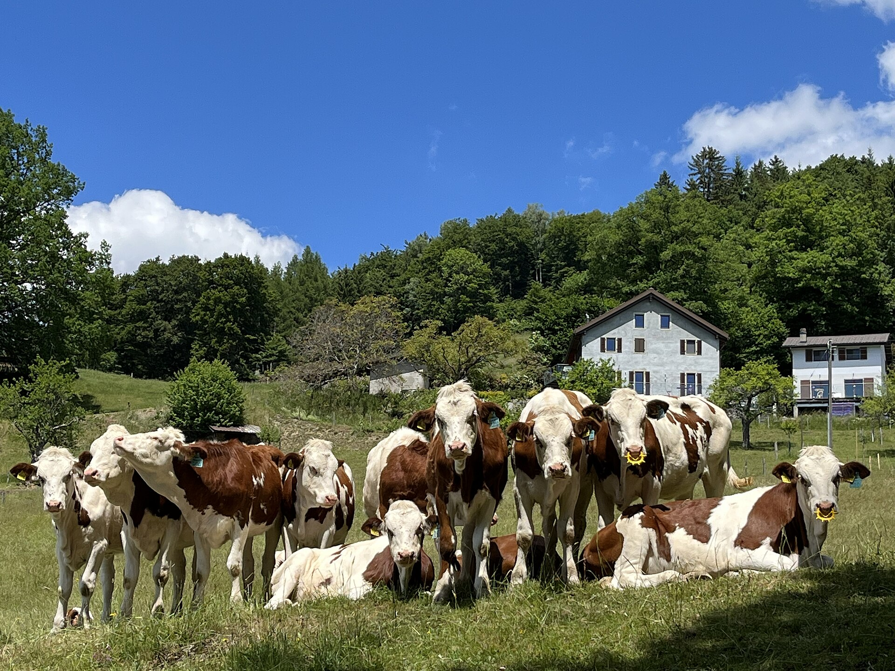

Missão
Promover a eficiência reprodutiva dos rebanhos bovinos por meio de soluções técnicas personalizadas, contribuindo para a produtividade e rentabilidade das propriedades rurais.
Consultoria de gestão reprodutiva bovina de alto desempenho
Consultoria em Gestão Reprodutiva Bovina
“Transformando eficiência reprodutiva em produtividade e rentabilidade para o produtor.”
Dra. Regma Luísa Almeida Santos Balbino de Melo
Dra. Marcela de Andrade Demétrio
Quem somos
A REPRO+BOV é uma empresa especializada em gestão reprodutiva bovina, criada para auxiliar produtores rurais na melhoria dos índices reprodutivos e no aumento da produtividade e da rentabilidade de suas propriedades.
Atendemos pequenos, médios e grandes produtores de bovinos de corte e leite, com acompanhamento técnico personalizado e estratégias individualizadas para cada realidade.
Nossa proposta vai além da inseminação artificial: oferecemos gestão reprodutiva integrada e contínua.
O problema e a oportunidade
Muitas propriedades apresentam baixos índices reprodutivos devido a falhas no manejo, nutrição inadequada, problemas sanitários e ausência de acompanhamento reprodutivo.
Menor número de bezerros nascidos
Aumento do intervalo entre partos
Mais animais improdutivos
Prejuízos econômicos para a propriedade
Institucional
Promover a eficiência reprodutiva dos rebanhos bovinos por meio de soluções técnicas personalizadas, contribuindo para a produtividade e rentabilidade das propriedades rurais.
Ser referência regional em consultoria e gestão reprodutiva bovina, reconhecida pela qualidade técnica, inovação e compromisso com os resultados.
Nossos serviços

Análise das condições reprodutivas dos animais, identificando possíveis fatores que comprometem o desempenho da propriedade.

Investigação de falhas reprodutivas relacionadas ao manejo, nutrição, sanidade e condições individuais dos animais.
Desenvolvimento de estratégias conforme as características e necessidades de cada propriedade.

Planejamento e execução de programas de IATF, visando melhorar a eficiência reprodutiva e o planejamento dos lotes.

Avaliação da condição gestacional dos animais para acompanhamento dos resultados reprodutivos.

Monitoramento dos resultados, permitindo identificar melhorias e orientar as próximas decisões da propriedade.
Nosso principal serviço
Um programa de recuperação e melhoria da eficiência reprodutiva da fazenda, em cinco etapas.
Não oferecemos somente inseminação artificial, mas um acompanhamento completo, baseado nos indicadores reprodutivos e nas necessidades de cada propriedade.
Nossos diferenciais
Diretamente nas fazendas.
Reprodutivo, ao longo de todo o ciclo.
Planejadas para cada propriedade.
Decisões baseadas em indicadores reprodutivos.
Atenção próxima às necessidades do produtor.
Foco em todos os perfis de produtores.
Nosso objetivo em cada atendimento.
Nossa atuação
Área inicial de atuação: Campina Grande e municípios vizinhos, na Paraíba.
Como funciona o atendimento
Pelo WhatsApp ou presencialmente.
Avaliação do rebanho e execução dos serviços.
Acompanhamento dos resultados.
Cada propriedade recebe uma atenção personalizada, de acordo com suas necessidades reprodutivas.
Contato
Solicite atendimento e descubra como elevar os índices produtivos do seu rebanho.
Chamar no WhatsApp